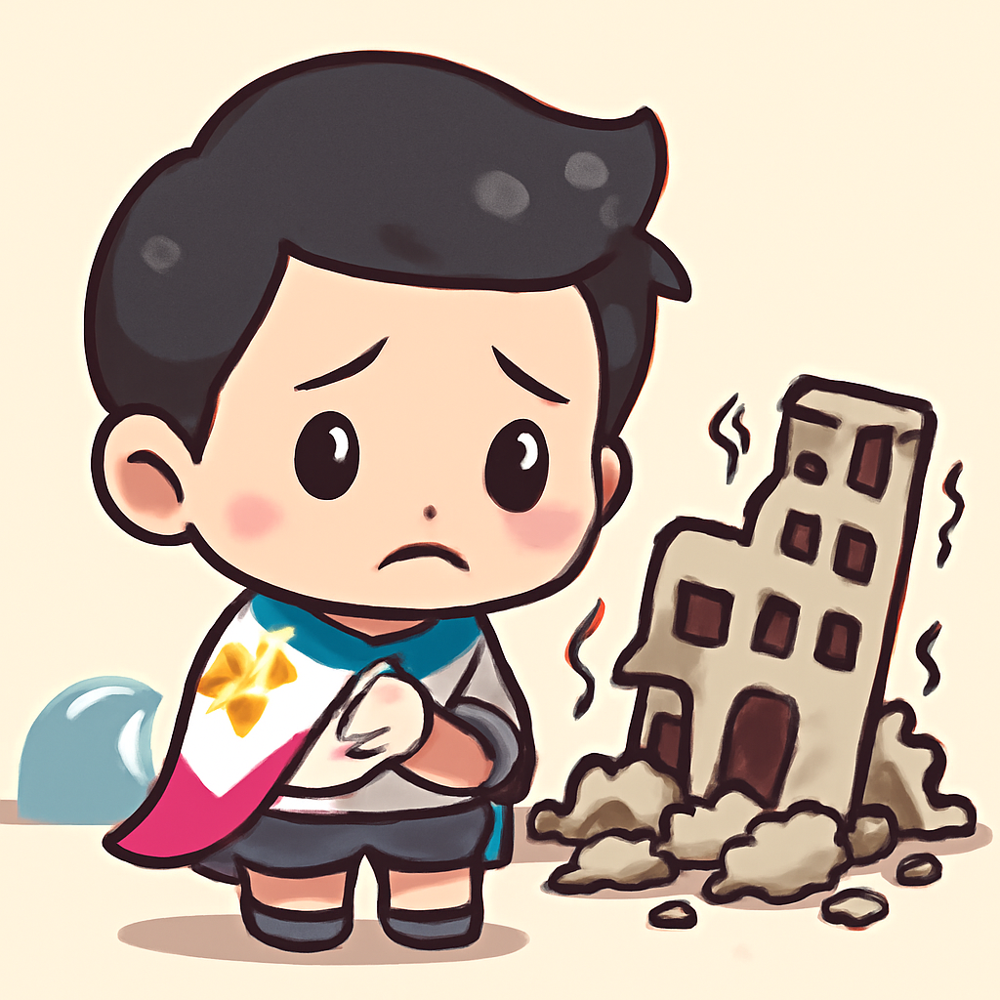
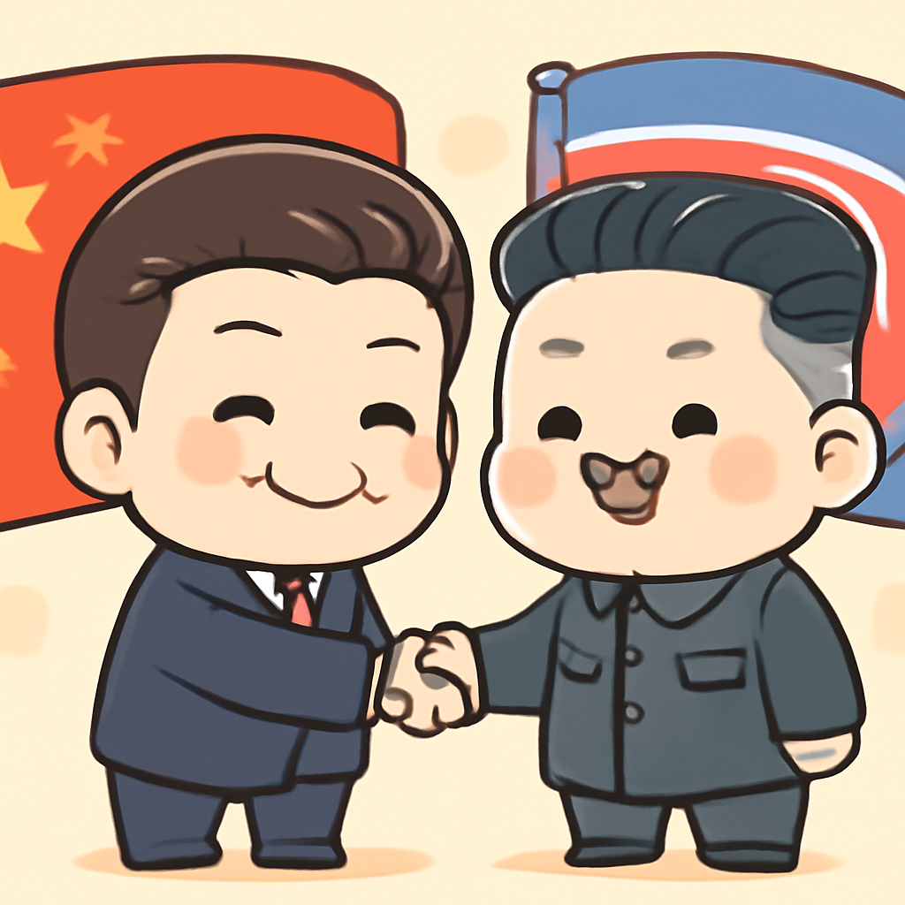

其一 · 菲律賓南部 · 大規模地震造成35人喪生
菲律賓南部發生7.8級大地震，導致35人遇難。

在菲律賓南部，7.8級的大地震於近日襲擊，造成至少35人喪生，還引發小海嘯波及印尼和日本。這場災難讓大批民眾流離失所，重建工作勢在必行。對於當地人民而言，這不是一次簡單的震撼，而是一場漫長的重建之路。希望大家都能早日找到安全的歸宿。
🔗 原始新聞 ↗
2026-06-09 · 以古觀今，以笑抗愁
菲律賓南部發生7.8級大地震，導致35人遇難。

在菲律賓南部，7.8級的大地震於近日襲擊，造成至少35人喪生，還引發小海嘯波及印尼和日本。這場災難讓大批民眾流離失所，重建工作勢在必行。對於當地人民而言，這不是一次簡單的震撼，而是一場漫長的重建之路。希望大家都能早日找到安全的歸宿。
🔗 原始新聞 ↗
以色列總理宣布暫時停止對伊朗的軍事行動。
近日，以色列總理內塔尼亞胡表示，因美國總統特朗普的介入，以色列目前"火力暫停"，而伊朗也同樣表示會停止攻擊。不過，雙方都警告如再次違反停火協議，將不會手下留情。這場軍事對抗讓中東局勢更為緊張，未來的和平之路依舊艱難。希望這不是短暫的寧靜。
🔗 原始新聞 ↗
SpaceX計劃首次公開發行股票，可能改變市場格局。
在美國加州，SpaceX正準備進行首次公開發行（IPO），這對於馬斯克和整個市場將是一場大賭注。若成功，將可能使這家公司及其創始人的財富大幅增長，甚至改變太空產業的面貌。每次馬斯克的行動都像是賭場裡的豪賭，大家都屏息以待，看看這次能否贏得大獎。
🔗 原始新聞 ↗
阿美尼亞總理成功連任，抵抗俄羅斯壓力。
在阿美尼亞，總理帕希尼揚的政黨在選舉中獲得近50%的支持，順利連任，這對於面對俄羅斯壓力的阿美尼亞來說，無疑是一場勝利。這次選舉不僅反映了國內的政治動向，也將影響阿美尼亞未來的外交路線。希望這個國家能在風雲變幻中找到自己的定位。
🔗 原始新聞 ↗
習近平與金正恩會面，重申中朝聯盟的穩定性。

最近，中國國家主席習近平訪問北韓，強調中朝之間的聯盟關係。這次會議不僅是對金正恩的支持，還是在當前國際局勢下，對外界發出強烈的聯合信號。隨著全球局勢的變化，中國與北韓的關係將持續受到關注。希望他們能好好合作，共同迎接未來的挑戰。
🔗 原始新聞 ↗